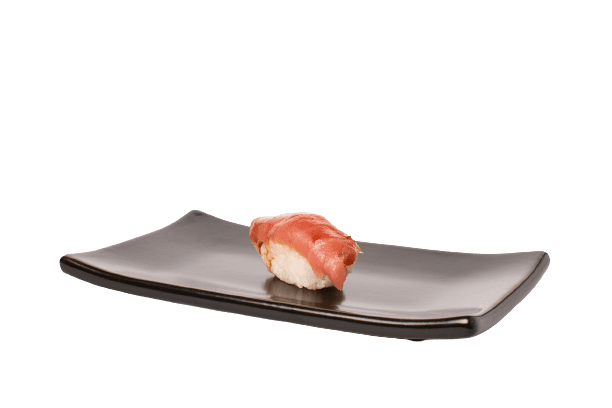
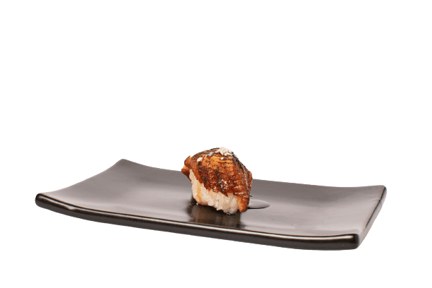
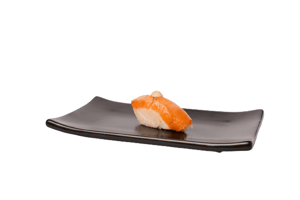
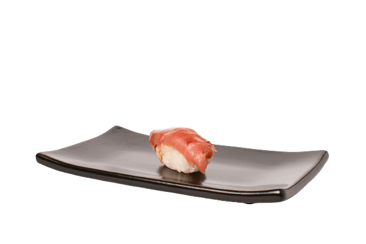
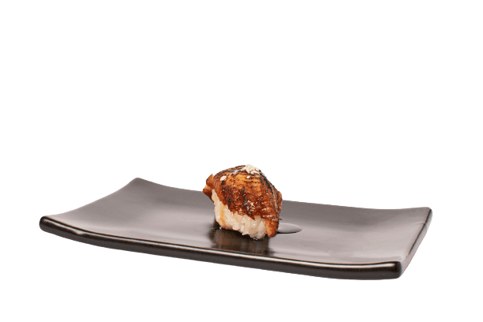
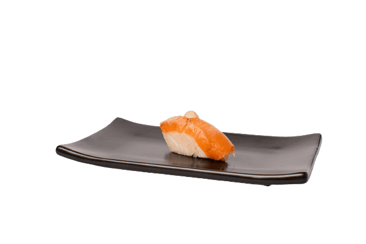

Tekkadan Dining
HISTORY
Japan's culinary heritage is a tapestry woven with centuries of tradition and craftsmanship. Sushi, a beloved dish, has roots tracing back to ancient Southeast Asia, where fish was preserved by fermenting it with rice and salt.
The artistry of Japanese knives shares a similar heritage of precision and history. Originating from the venerable craft of samurai sword-making, Japanese blades have been refined across generations. The same pursuit of perfection that shaped legendary swords now creates kitchen knives with unparalleled sharpness and balance.
Japan's profound relationship with the sea extends beyond the kitchen. The culture of fish in Japan reflects the nation's deep respect for marine life. Sustainable fishing practices, such as "sato-umi," emphasize the preservation of the delicate marine ecosystem.
OUR WORK
At Tekkadan Dining, we proudly embrace the legacy of classic sushi, wholeheartedly devoted to preserving the authenticity and tradition of Japanese culinary artistry. Our commitment to excellence is not just a promise; it's the very essence of our work.
Central to our philosophy is the relentless pursuit of perfection in every bite. We painstakingly source the finest ingredients, handpicking each element that graces our sushi. From the freshest catches of the sea to the precision of our rice, we leave no stone unturned in ensuring that every piece of sushi we serve is a testament to quality and craftsmanship.
Beyond crafting exceptional dishes, we strive to offer an immersive cultural experience. Dining at Tekkadan is more than just a meal; it's a journey to the heart of Japan. Our dedicated chefs not only prepare sushi; they curate an unforgettable experience that honors the rich heritage of sushi and the traditions that have made it an enduring culinary treasure. Join us at Tekkadan Dining, where every visit is a voyage into the soul of classic sushi.
 





OUR DISHES
Our culinary philosophy at Tekkadan Dining revolves around two key principles: complex elaboration and uncompromising quality. Our dishes are a testament to the intricate craftsmanship that goes into each plate.
Our chefs are true artisans, combining years of experience with a passion for perfection. From the delicate art of slicing sashimi to the precision required for crafting our sushi, every step in the culinary process is meticulously executed.
The result is a symphony of flavors and textures that elevate your dining experience to new heights.